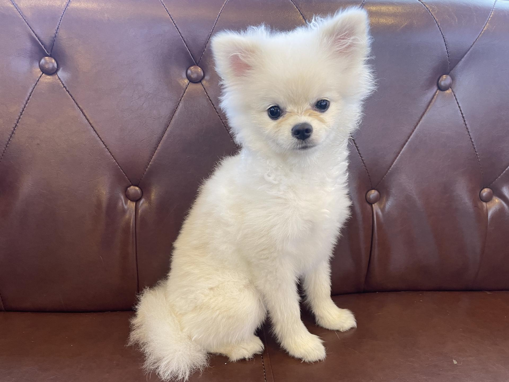
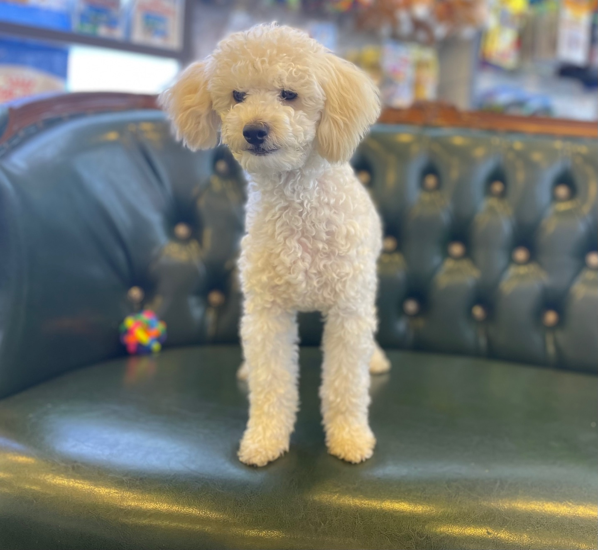
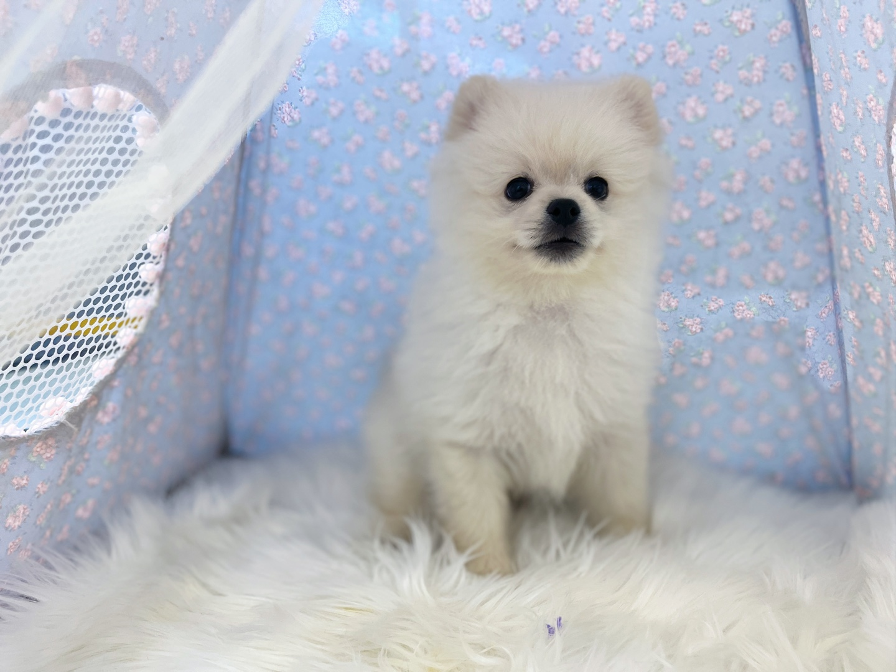
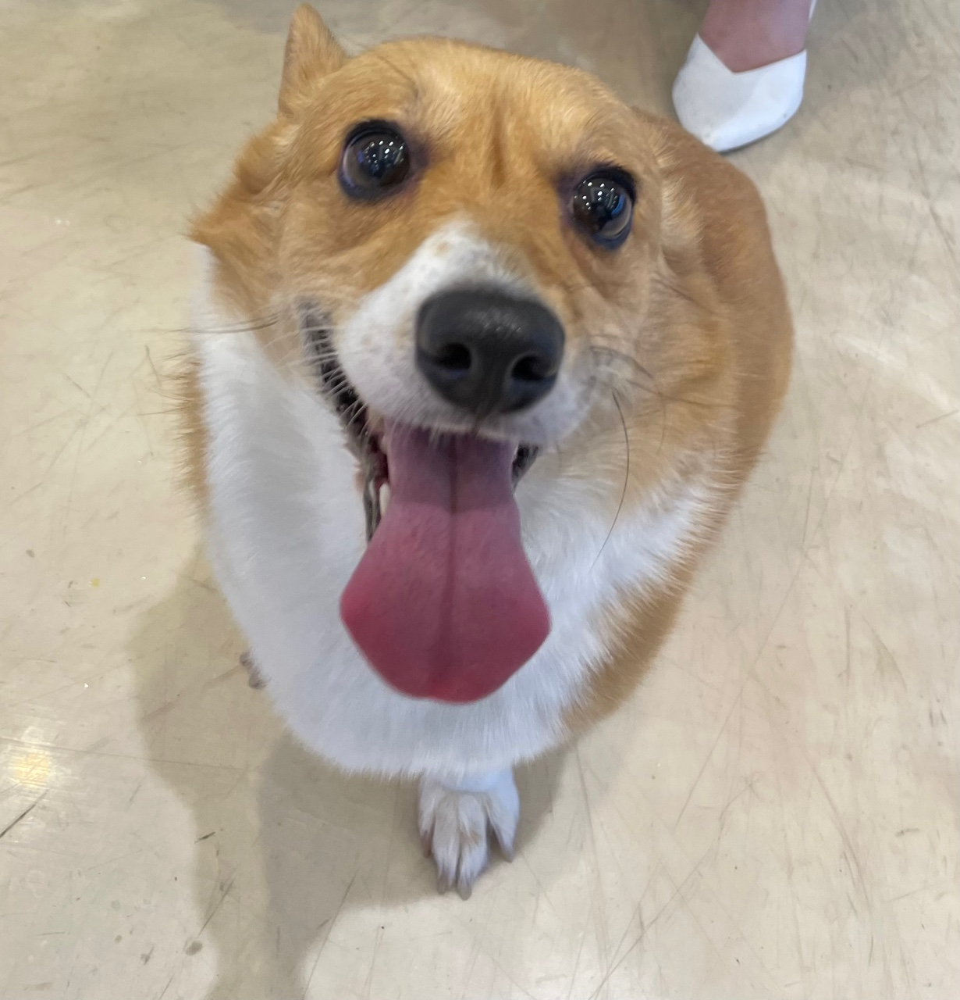
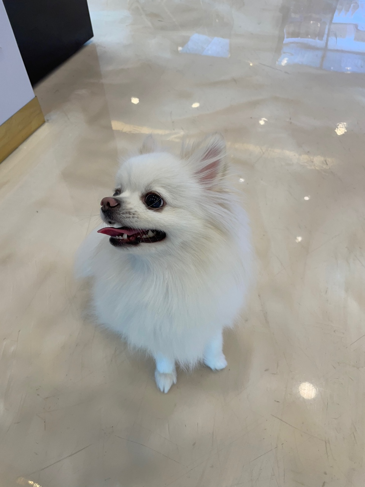
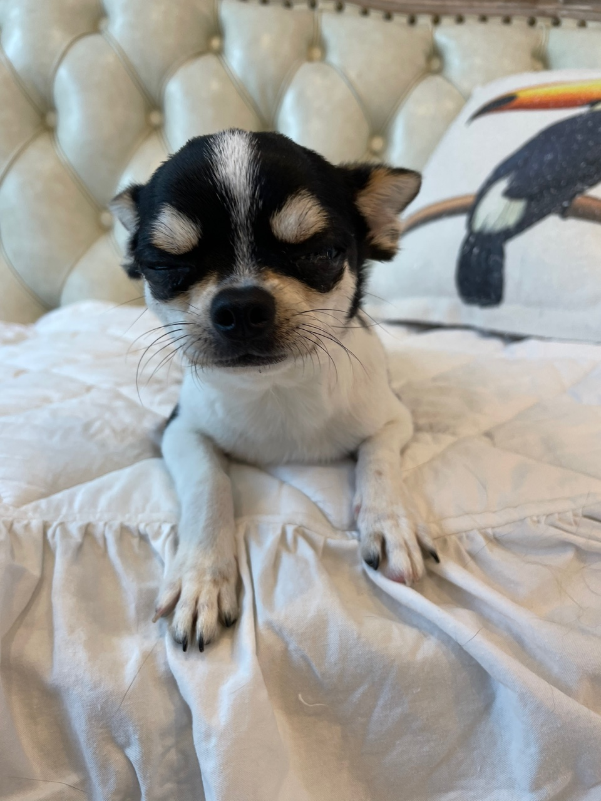
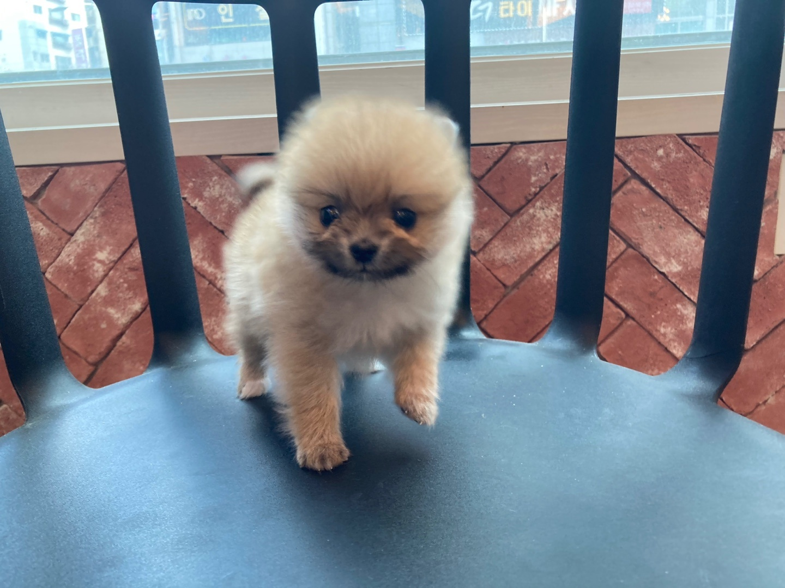
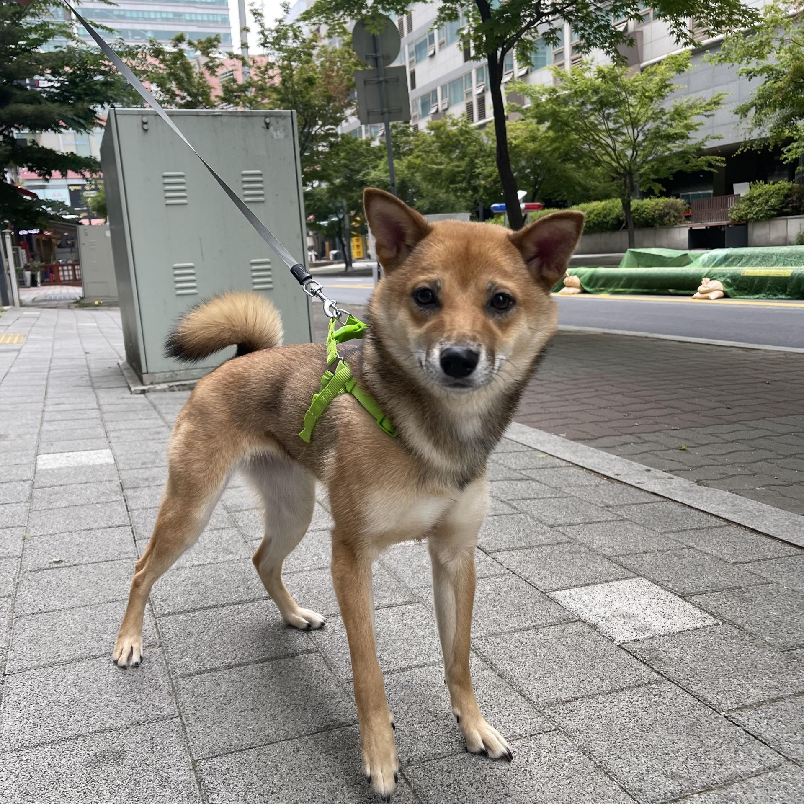
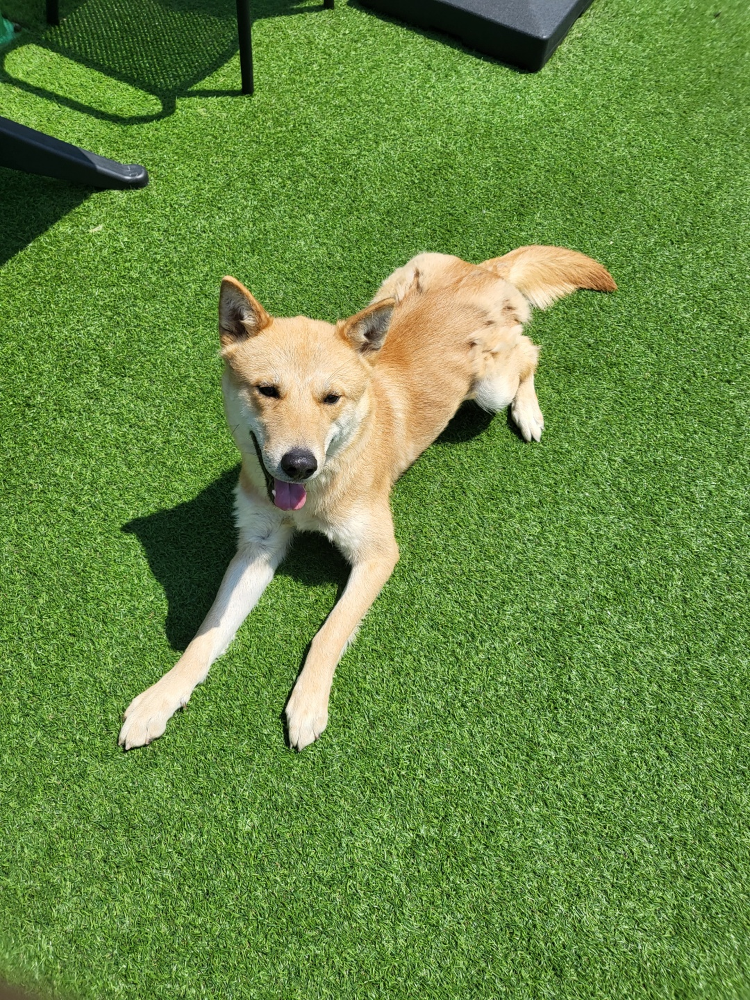
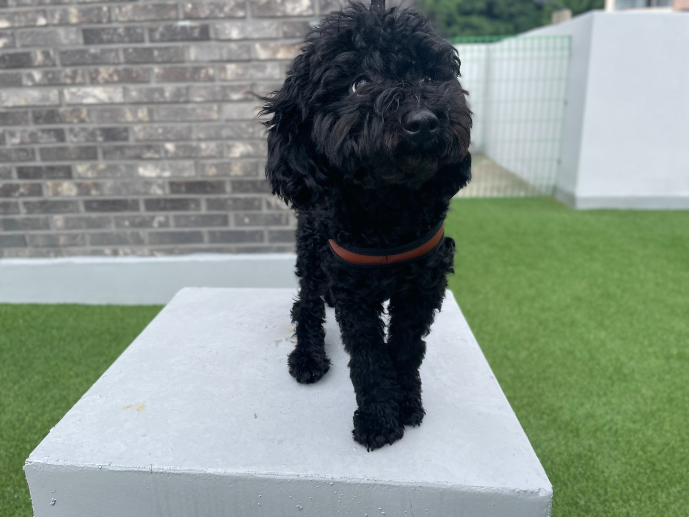

두리도그의 보호유기견 품종:비숑 프리제유기된 지역:춘천시 효자동 특징:간식을 좋아함  품종:포메라니안유기된 지역:강원도 평창군 특징: -  품종:푸들유기된 지역:춘천시 동면 특징:산책을 좋아함  품종:포메라니안유기된 지역:춘천시 퇴계동 특징: - 품종:말티즈유기된 지역:원주시 단구동 특징:-  품종:웰시코기유기된 지역:춘천시 신북읍 특징:사람을 좋아함-  품종:폼피츠유기된 지역:춘천시 동면 특징:사람을 좋아함  품종:치와와유기된 지역:춘천시 근화동 특징:애교 많음  품종:포메라니안유기된 지역:가평군 대성리 특징:-  품종:시바이누유기된 지역:가평군 청평리 특징:- 품종:포메라니안유기된 지역:경기도 하남시 특징:-  품종:진돗개유기된 지역:춘천시 칠전동 특징:용맹함  품종:푸들유기된 지역:경기도 성남시 특징:- 품종:스피츠유기된 지역:경기도 용인시 특징:- 품종:코카스파니엘유기된 지역:춘천시 후평동 특징:사람을 좋아함


 품종:말티즈
품종:말티즈 품종:코카스파니엘
품종:코카스파니엘